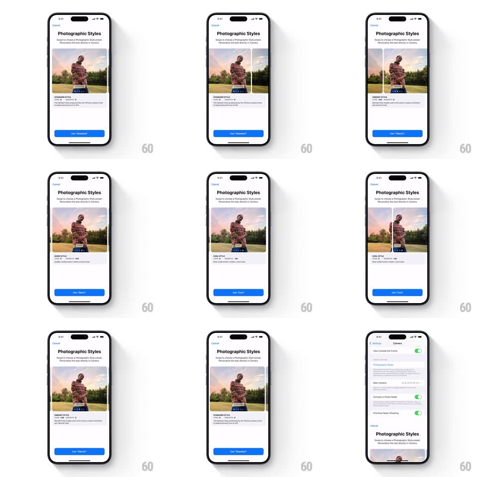

Media
Frame-by-frame

Rebuild this interaction 1:1: Apple's Photographic Styles picker - swiping horizontally across the sample photo slides between Standard, Rich Contrast, Vibrant, Warm, and Cool with the style name, tone values, and the button label updating in sync.

Rebuild this interaction 1:1: Apple's Photographic Styles picker - swiping horizontally across the sample photo slides between Standard, Rich Contrast, Vibrant, Warm, and Cool with the style name, tone values, and the button label updating in sync.
## Integration
Integration: stack-agnostic spec - springs given as stiffness/damping, timed motions as duration + curve; map every value to your framework and animation library of choice.
## Scene
A "Photographic Styles" sheet from Camera settings: "Swipe to choose a Photographic Style preset." above a sample photo of a person in a field. A style label overlays the photo's bottom (STANDARD STYLE / RICH CONTRAST / VIBRANT / WARM / COOL with Tone and Color values), a description paragraph, and a blue "Use 'Standard'" button.
## Motion spec
Pattern: swipe carousel with synchronized styling, ~400ms per page.
- Drag: the photo tracks the finger 1:1; the incoming style's photo peeks from the edge.
- Settle: on release the photo snaps to center (spring ~380/24, 300ms) while the photo's rendering crossfades to the new style's grade (300ms) - warmth, contrast, and saturation shift visibly.
- Text: the style name slides with the photo; the Tone/Color values and description crossfade (200ms); the button label morphs ("Use 'Vibrant'") with a 150ms crossfade.
- Edge bounce: swiping past the last style rubber-bands (0.4x resistance) and springs back.
## Calibration
- The photo grade change is the point - the same photo re-rendered, not five different photos.
- Name, values, description, and button never end a swipe out of sync.
## Reduced motion
Styles crossfade without the drag-tracked slide.
## Don't miss
- The overlay label rides with the photo, pinned to its bottom edge.
- The button is always armed for the visible style - label updates before the swipe settles.